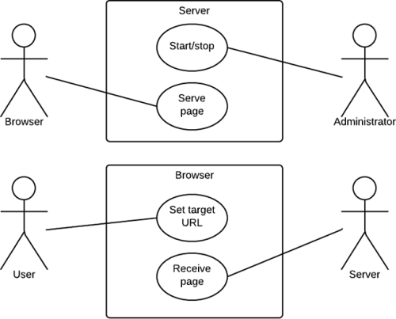
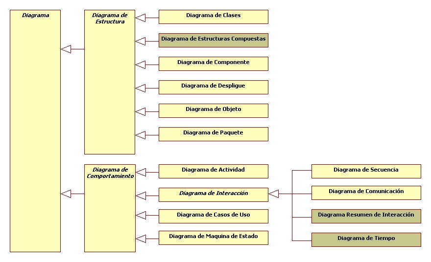

UML y su función en el modelado y diseño orientados a objetos
Hay muchos paradigmas o modelos para la resolución de problemas en la informática, que es el estudio de algoritmos y datos. Hay cuatro categorías de modelos para la resolución de problemas: lenguajes imperativos, funcionales, declarativos y orientados a objetos (OOP). En los lenguajes orientados a objetos, los algoritmos se expresan definiendo 'objetos' y haciendo que los objetos interactúen entre sí. Esos objetos son cosas que deben ser manipuladas y existen en el mundo real. Pueden ser edificios, artefactos sobre un escritorio o seres humanos. Los lenguajes orientados a objetos dominan el mundo de la programación porque modelan los objetos del mundo real. UML es una combinación de varias notaciones orientadas a objetos: diseño orientado a objetos, técnica de modelado de objetos e ingeniería de software orientada a objetos. UML usa las fortalezas de estos tres enfoques para presentar una metodología más uniforme que sea más sencilla de usar. UML representa buenas prácticas para la construcción y documentación de diferentes aspectos del modelado de sistemas de software y de negocios.
Tipos de diagramas UML
UML usa elementos y los asocia de diferentes formas para formar diagramas que representan aspectos estáticos o estructurales de un sistema, y diagramas de comportamiento, que captan los aspectos dinámicos de un sistema.
"Diagramas UML estructurales"
El diagrama UML más comúnmente usado, y la base principal de toda solución orientada a objetos. Las clases dentro de un sistema, atributos y operaciones, y la relación entre cada clase. Las clases se agrupan para crear diagramas de clases al crear diagramas de sistemas grandes.
Muestra la relación estructural de los elementos del sistema de software, muy frecuentemente empleados al trabajar con sistemas complejos con componentes múltiples. Los componentes se comunican por medio de interfaces.
Los diagramas de estructura compuesta se usan para mostrar la estructura interna de una clase.
Ilustra el hardware del sistema y su software. Útil cuando se implementa una solución de software en múltiples máquinas con configuraciones únicas.
Muestra la relación entre objetos por medio de ejemplos del mundo real e ilustra cómo se verá un sistema en un momento dado. Dado que los datos están disponibles dentro de los objetos, estos pueden usarse para clarificar relaciones entre objetos.
Hay dos tipos especiales de dependencias que se definen entre paquetes: la importación de paquetes y la fusión de paquetes. Los paquetes pueden representar los diferentes niveles de un sistema para revelar la arquitectura. Se pueden marcar las dependencias de paquetes para mostrar el mecanismo de comunicación entre niveles.

"UML de comportamiento"
Flujos de trabajo de negocios u operativos representados gráficamente para mostrar la actividad de alguna parte o componente del sistema. Los diagramas de actividades se usan como una alternativa a los diagramas de máquina de estados.
Similar a los diagramas de secuencia, pero el enfoque está en los mensajes que se pasan entre objetos. La misma información se puede representar usando un diagrama de secuencia y objetos diferentes.
Hay siete tipos de diagramas de interacciones. Este diagrama muestra la secuencia en la cual actúan.
Muestra cómo los objetos interactúan entre sí y el orden de la ocurrencia. Representan interacciones para un escenario concreto.
Similar a los diagramas de actividades, describen el comportamiento de objetos que se comportan de diversas formas en su estado actual.
Al igual que en los diagramas de secuencia, se representa el comportamiento de los objetos en un período de tiempo dado. Si hay un solo objeto, el diagrama es simple. Si hay más de un objeto, las interacciones de los objetos se muestran durante ese período de tiempo particular.
Representa una funcionalidad particular de un sistema. Se crea para ilustrar cómo se relacionan las funcionalidades con sus controladores (actores) internos/externos.